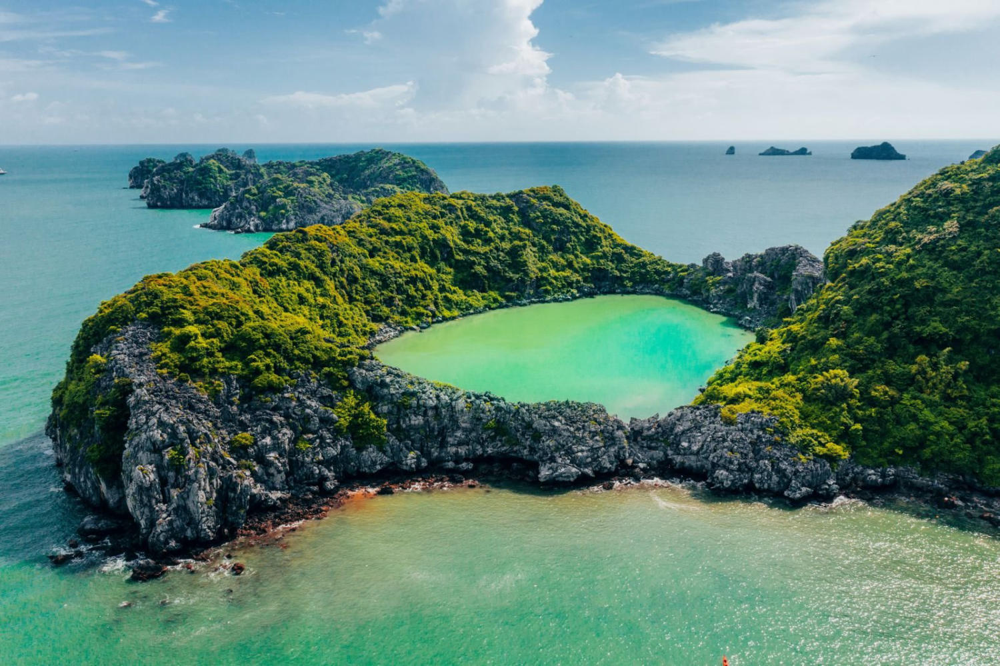

VÒNG QUANH VIỆT NAM

Chào mừng đến với Vịnh Hạ Long!
Cách Hà Nội khoảng 160 km, TP Hạ Long thuộc tỉnh Quảng Ninh là một điểm du lịch nổi tiếng không chỉ của miền Bắc, toàn quốc mà trên khắp thế giới. Hạ Long có vịnh biển, có các di sản thế giới, các hoạt động du lịch phong phú, đồ ăn ngon...
Hạ Long mùa nào đẹp?
TP Hạ Long nằm ở miền Bắc nên khí hậu đủ 4 mùa. Các tháng 4-6 trời ấm không mưa, tháng 6-8 nắng nóng có thể có mưa bão, tháng 9-12 tiết trời mát dần và trở lạnh. Mỗi mùa ở đây lại có một vẻ đẹp riêng, mùa hè bạn tới Hạ Long bơi lội, tắm nắng thì mùa xuân, thu mát mẻ thích hợp để ngắm một Hạ Long bớt ồn ào hơn và tham gia các hoạt động ngoài trời cũng như khám phá các khu vui chơi giải trí. Mùa cao điểm là từ tháng 6 đến tháng 8, thành phố đông đúc, đặc biệt vào dịp cuối tuần.Một vài trải nghiệm bạn nên thử khi đến với Vịnh Hạ Long:
Chơi đâu?
Vịnh Hạ Long là di sản thế giới có vẻ đẹp tự nhiên hút hồn du khách trong và ngoài nước. Vịnh có hàng nghìn đảo đá vôi lớn nhỏ với đủ hình thù nằm rải rác, tạo nên khung cảnh kỳ vĩ và khác biệt với phần còn lại của thế giới. Một lựa chọn phổ biến là đi tàu ngắm cảnh với các hành trình đi qua những điểm như hòn Gà Chọi, hòn Đỉnh Hương, hang Sửng Sốt, động Thiên Cung, đảo Titop...
Hang Luồn hấp dẫn du khách bởi cảnh sắc thiên nhiên tuyệt vời, bởi sự kết hợp đan xen giữa sắc nước, mây trời, đến từng vách đá, gốc cây như hoàn mĩ, không có khuyết điểm. Điểm đến này như một món quà từ Mẹ Thiên Nhiên đã ban cho Hạ Long.
Đảo Mắt Rồng. Toàn bộ diện tích của hòn đảo này được bao quanh bởi những khối núi đá vôi lớn và bãi cắt trắng tự nhiên. Từ trên cao nhìn xuống, hòn đảo giống như một cái đầu rồng, hồ nước giữa hồ như mắt rồng. Đó là lý do mà du khách gọi đây là đảo Mắt Rồng.

Bãi tắm Bãi Cháy bãi biển nhân tạo nằm phía sau công viên Sun World được mở rộng ra biển gần 1 km so với trước đây. Bãi rộng, cát sạch thích hợp để tổ chức các trò chơi theo nhóm, tắm biển, tắm nắng hoặc đi dạo ngắm bình minh...
Núi Bài Thơ cao 200 m, được coi là điểm ngắm cảnh thú vị nhìn ra vịnh Hạ Long và thành phố. Núi ban đầu có tên gọi là Truyền Đăng, tức Rọi Đèn, để chỉ vọng gác trọng yếu của cửa ải Đông Bắc từ hàng ngàn năm trước, có nhiệm vụ soi đường dẫn lối cho thuyền bè trên vịnh.